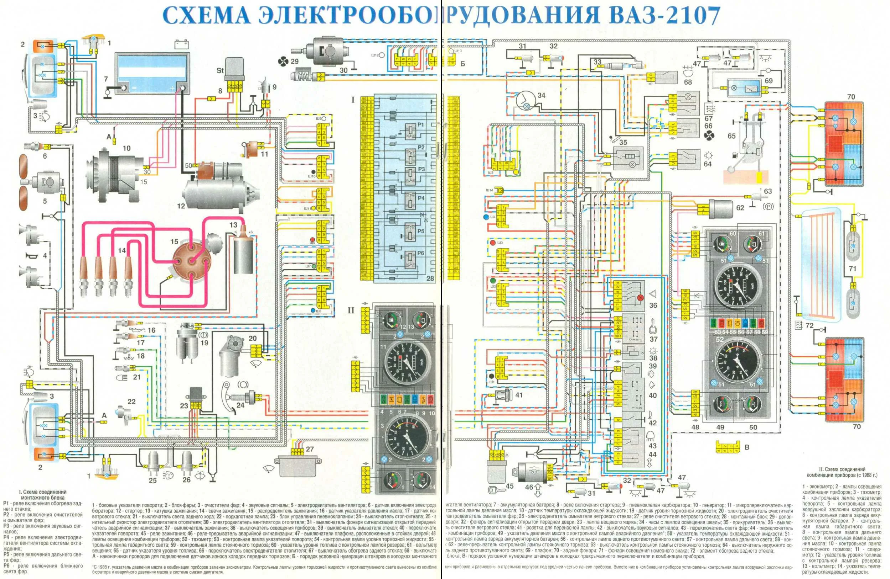

ВАЗ-2107
Фото

Краткая инфо
ВАЗ-2107 «Жигули» (LADA 2107) — советский и российский заднеприводный автомобиль II группы
малого класса, с кузовом типа седан
История
В начале 1970-х в КБ АвтоВАЗ началась работа по созданию второго поколения заднеприводных
легковых автомобилей, призванных заменить выпускавшиеся модели ВАЗ-2101, ВАЗ-2102, 2103. Так же
как и в случае с предыдущими моделями, планировалось создание автомобиля с кузовом седан в
стандартной комплектации (модель 2105), автомобиля с грузопассажирским кузовом типа «универсал»
(2104) и автомобиля с кузовом седан более высокого сегмента (2107). Первые ходовые прототипы
ВАЗ-2107 были построены в 1978 году. Серийное производство модели 2107 началось в марте 1982
года. В 2006 году произошёл ребрендинг всего классического семейства АвтоВАЗа (за исключением
модели 2106, которую в этом же 2006 году снимали с производства). Таким образом, ВАЗ 2107
«Жигули» стал называться LADA 2107.
ВАЗ-2107 — модифицированная люкс-версия автомобиля ВАЗ-2105, который, в свою очередь, ведёт своё
происхождение от Fiat 124, малолитражного семейного седана образца 1966 года (победителя
конкурса Европейский автомобиль года 1967 года). На экспорт ВАЗ-2107 шёл под названиями Lada
Nova, Lada Riva, Lada Signet, Lada 1500.
Дизайнер многих автомобилей классического семейства — Владимир Степанов.
С 2002 по 2012 год ВАЗ-21070 (модификация ВАЗ-2107) производился на территории Украины (ЛуАЗ,
ЗАЗ и КрАСЗ). В мае 2008 года сборка LADA 2107 налажена на аргунском заводе «Пищемаш» в
Чеченской Республике. С марта 2011 года выпуск LADA 2107 освоен Ижевским автозаводом.
В апреле 2012 года концерн АвтоВАЗ под управлением Игоря Комарова принял решение окончательно
прекратить производство классического седана LADA 2107 на заводе «ИжАвто». Данное решение
принято по причине сильно упавшего спроса на данную модель, а также из-за ускорения работ в
Ижевске по подготовке производства к выпуску Lada Granta. Последний седан LADA 2107 сошёл с
конвейера завода «ИжАвто» 17 апреля 2012 года. В Египте LADA 2107 собиралась до начала 2014
года. В 2014 году ВАЗ-2107 был снят с производства окончательно.
Производство универсала 2104, унифицированного с седаном по силовой установке, экстерьеру и
интерьеру передней части кузова, продолжилось до 17 сентября 2012 года.
В марте 2017 года аналитическое агентство «Автостат» провело исследование, по результатам
которого самым популярным легковым автомобилем в России стал седан LADA 2107. Этой моделью на
момент исследования управляли 1,75 млн россиян. По данным на середину 2022 года, LADA 2107
по-прежнему является самой распространённой моделью на российских дорогах (на учёте состоят 1562
тыс. автомобилей этой марки)
Конструкция
Кузов
Кузов — четырёхдверный седан, цельнометаллический, сварной, несущей конструкции (безрамный).
Некоторые элементы:
Каркас состоит из передка кузова, передних крыльев с усилителями, крыши с рамками ветрового и
заднего стёкол, пола с усилителями и панелью задка, боковин и задних крыльев.
Навесные детали: капот, двери, крышка багажника, бамперы.
Передние сиденья — раздельные, регулируются по продольному положению и наклону спинки.
Заднее сиденье — трёхместное, нерегулируемое, в спинке установлен выдвижной подлокотник.
Двигатель
Двигатель расположен в моторном отсеке продольно. Некоторые модели:
ВАЗ-2103 — карбюраторный двигатель рабочим объёмом 1,5 л.
ВАЗ-2104 — инжекторный двигатель рабочим объёмом 1,5 л, с системой улавливания паров топлива и
каталитическим нейтрализатором в системе выпуска отработавших газов.
Продам двигатель ваз 2107. - купить в Зеленокумске, цена 16 000 руб., продано 7 марта 2017 -
Запчасти
Трансмиссия
Коробка передач — механическая, трёхвальная, пятиступенчатая (четырёхступенчатая на автомобилях
ранних выпусков). Некоторые элементы:

Валы — ведущий и ведомый, которые соединяются через шестерни.
Шестерни на валах имеют различное количество зубьев, что позволяет регулировать передаточное
отношение.
Муфты приводят в действие шестерни, переключая передачи.
Подшипники используются для уменьшения трения и обеспечения плавного вращения различных валов в
коробке передач.
Системы
Рабочая тормозная система — с двухконтурным гидравлическим приводом с вакуумным усилителем.
Тормозные механизмы передних колёс — дисковые, задних — барабанные. Стояночный тормоз — ручной с
тросовым приводом на тормозные механизмы задних колёс.
Рулевое управление — с травмобезопасной рулевой колонкой и противоугонным устройством.
Иллюстрации схем систем автомобиля ВАЗ-2107: электрооборудование, тормозная система, рулевое
управление и др
Модификации
ВАЗ-21070. Двигатель 2103, объём 1,5 л, 8 кл., карбюратор, передние и задние алюминиевые бамперы
с резиновой вставкой.
ВАЗ-21072. Двигатель 2105, объём 1,3 л, 8 кл., карбюратор, ремённый привод ГРМ.
ВАЗ-21073. Двигатель 21213, объём 1,7 л, 8 кл., моновпрыск, экспортная версия для европейского
рынка.
ВАЗ-21074. Двигатель 2106, объём 1,6 л, 8 кл., карбюратор.
ВАЗ-2107-20. Двигатель 2104, объём 1,5 л, 8 кл., распределённый впрыск, Евро-2.
ВАЗ-2107-71. Двигатель 1,4 л, 66 л. с., под бензин А-76, версия для Китая.
ВАЗ-21074-20. Двигатель 21067-10, объём 1,6 л, 8 кл., распределённый впрыск, Евро-2.
ВАЗ-21074-30. Двигатель 21067-20, объём 1,6 л, 8 кл., распределённый впрыск, Евро-3.
ВАЗ-210740. Двигатель 21067, объём 1,6 л, 55 кВт/72,7 л. с., 8 кл., инжектор, катализатор (2007
г.в.).
ВАЗ-21077. Двигатель 2105, объём 1,3 л, 8 кл., карбюратор, ремённый привод ГРМ, экспортная
версия для Великобритании.
ВАЗ-21078. Двигатель 2106, объём 1,6 л, 8 кл., карбюратор, экспортная версия для Великобритании.
ВАЗ-21079. Роторно-поршневой двигатель 1,3 л, 140 л. с., изначально создана для нужд МВД и КГБ
(годы производства: 1986–1991).
ВАЗ-2107 ЗНГ. Двигатель 21213, объём 1,7 л, 8 кл., центральный впрыск.
Модель
Модель я взял у Пользователя mamont nikita
У него ещё много таких крутых моделей и я их использую для сайта. Спасибо mamont nikita!
Ссылка на модель: https://sketchfab.com/3d-models/vaz-2107-4315e4d4f2aa48a7afe22ae759931f23
Ссылка на mamont nikita: https://sketchfab.com/mamontnikita62
Если вы захотите распечатать на 3д принтере:
Ccылка на скачивание модели: https://sketchfab.com/3d-models/vaz-2107-4315e4d4f2aa48a7afe22ae759931f23#download
Остались вопросы, или Хотите чтото добавить пишите на